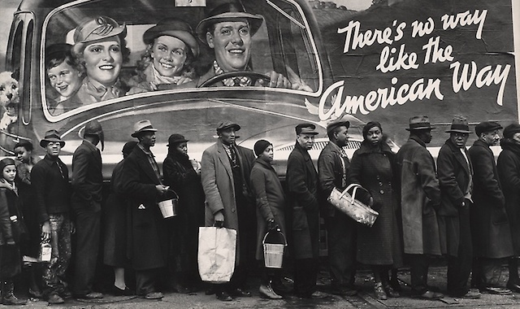

<!DOCTYPE html>
<html xmlns="http://www.w3.org/1999/xhtml" lang="" xml:lang="">
<head>
  <meta charset="utf-8" />
  <meta name="generator" content="pandoc" />
  <meta name="viewport" content="width=device-width, initial-scale=1.0, user-scalable=yes" />
  <meta name="author" content="David Ehrens" />
  <title>The Accounting of History</title>
  <style>
    html { line-height: 1.5; font-family: Georgia, serif; font-size: 18px; color: #1a1a1a; background-color: #fdfdfd; } body { margin: 0 auto; max-width: 40em; padding-left: 30px; padding-right: 30px; padding-top: 8px; padding-bottom: 30px; hyphens: auto; word-wrap: break-word; text-rendering: optimizeLegibility; font-kerning: normal; } @media (max-width: 600px) { body { font-size: 0.9em; padding: 1em; } } @media print { body { background-color: transparent; color: black; font-size: 12pt; } p, h2, h3 { orphans: 3; widows: 3; } h2, h3, h4 { page-break-after: avoid; } } p { margin: 1em 0; } a { color: Crimson; /* #ee0000; */ text-decoration:none; } a:hover { color: Orange; } img { max-width: 100%; display:block; margin-left:auto; margin-right:auto; } h1, h2, h3, h4, h5, h6 { margin-top: 1.4em; } h5, h6 { font-size: 1em; font-style: italic; } h6 { font-weight: normal; } ol, ul { padding-left: 1.7em; margin-top: 1em; } li > ol, li > ul { margin-top: 0; } blockquote { margin: 1em 0 1em 1.7em; padding-left: 1em; border-left: 2px solid #e6e6e6; color: #606060; } code { font-family: Menlo, Monaco, 'Lucida Console', Consolas, monospace; font-size: 85%; margin: 0; } pre { margin: 1em 0; overflow: auto; } pre code { padding: 0; overflow: visible; } .sourceCode { background-color: transparent; overflow: visible; } hr { background-color: #1a1a1a; border: none; height: 1px; margin: 1em 0; } table { margin: 1em 0; border-collapse: collapse; width: 100%; overflow-x: auto; display: block; font-variant-numeric: lining-nums tabular-nums; } table caption { margin-bottom: 0.75em; } tbody { margin-top: 0.5em; border-top: 1px solid #1a1a1a; border-bottom: 1px solid #1a1a1a; } th { border-top: 1px solid #1a1a1a; padding: 0.25em 0.5em 0.25em 0.5em; } td { padding: 0.125em 0.5em 0.25em 0.5em; } header { margin-bottom: 2em; text-align: center; font-family: Arial, Helvetica, san-serif; } h1.title { color: #777777; margin: 2px; } p.author, p.date { margin: 2px; font-style: italic; font-size: smaller; } #TOC li { list-style: none; } #TOC a:not(:hover) { text-decoration: none; } code{ white-space: pre-wrap; } span.smallcaps{ font-variant: small-caps; } span.underline{ text-decoration: underline; } div.column{ display: inline-block; vertical-align: top; width: 50%; } div.hanging-indent{ margin-left: 1.5em; text-indent: -1.5em; } ul.task-list{ list-style: none; } .display.math{ display: block; text-align: center; margin: 0.5rem auto; }
  </style>
</head>
<body>
<header id="title-block-header">
<h1 class="title">The Accounting of History</h1>
<p class="author">David Ehrens</p>
<p class="date">2019-07-28 08:00</p>
</header>

<p></p>
<p>For White America, the accounting of history is all assets and no liabilities. Iowa’s Steve King never stops saying that the profits on America’s balance sheet all belong to white people because, over hundreds of years, it was white people who tamed a brown continent and brought “civilization” to it. Ask White America about Confederate history and you will hear that the <em>Lost Cause</em> is a crucial part of American history and American identity. To take down rebel monuments is to strike assets off White America’s ledgers.</p>
<p>The <a target="_blank" href="https://en.wikipedia.org/wiki/Western_canon">Western Canon</a>, still taught in some universities, is a sort of Western/white supremacist version of world history and culture. It originally consisted of almost exclusively Greek, Roman, and Christian sources. Ask a white Evangelical Christian, who now only grudgingly acknowledges the “Judeo” part of our newly-reformulated “Judeo-Christian” culture, and you’ll hear that the biblical kingdoms of “Samaria” and “Judea” should be reserved for overwhelmingly European settlers under Israel’s Law of Return, and that Palestinians should remain under perpetual occupation. There’s a thick thread of racism running through all of Western history and culture.</p>
<p>But when it comes to <a target="_blank" href="https://www.theatlantic.com/magazine/archive/2014/06/the-case-for-reparations/361631/">reparations</a> for slavery, White America has a completely different accounting scheme — a scheme in which all debts are automatically cancelled. In this scheme, since all contributions by non-whites are negligible, and their presence so unwanted, their claims on American history are nothing but petty annoyances. <em>If someone wronged you, your parents, your grandparents — even every generation of your ancestors — well, too bad, it’s not our fault. Get over it. No debts were incurred. And no debts need be paid after such a long time.</em></p>
<p>For a people who don’t believe in a free lunch — not even for poor children — it is curious that White Americans so resolutely refuse to pay their debts. And as a nation we have some pretty big ones — colonialism, genocide, territorial expropriation, slavery, and centuries of racism. In the history of American Capitalism, it was slavery that set the Confederate economy in motion. And it was slavery that underpinned the cotton trade upon which the Northern textile industries were based. Thus, even New England cities — under Northern Capitalism — became rich from slavery. Today White America, South and North, wring their hands over the complexity of the accounting. But regardless of the unwillingness of the debtor to pay the debt, the interest on our Original Sin just keeps accruing.</p>
<p>In the orthodox [White] re-telling of American history, <em>Our good fortune simply fell off a truck. We were lucky enough, and smart enough, to simply scoop it up for ourselves</em>. The triumphalist says: <em>I got mine; the hell with the rest of you</em>. Yet, whether by lying to ourselves about our history or by the sociopathic glorification of it, White America knows full well what it has stolen. And for those who recognize the stolen merchandise as <em>theirs</em>, they know what crimes were committed and that payment is due. That payment must consist of not only a monetary value but a moral accounting.</p>
<p>As much as Republicans and Centrist Democrats would like race to simply go away, a national discussion about reparations — like racism itself — is long overdue. It is not surprising that we are hearing about reparations in the 2020 presidential campaign from both candidates of color and several white Democrats. <a target="_blank" href="https://www.theatlantic.com/magazine/archive/2014/06/the-case-for-reparations/361631/">Ta-Nihisi Coates</a> recently penned a long “Case for Reparations” in the Atlantic, and in it he makes the case, mentioning <a target="_blank" href="https://www.congress.gov/bill/115th-congress/house-bill/40">H.R.40</a>, a bill sponsored in the last legislative session by Michigan Democrat John Conyers, Jr., “Commission to Study and Develop Reparation Proposals for African-Americans Act.”</p>
<p><a target="_blank" href="http://www.youtube.com/watch?v=kcCnQ3iRkys">plugin:youtube</a></p>
<p>Like a Truth and Reconciliation process, a reparations commission would require White America to come to grips with our real history. The questions are complex, the solutions even more so. How do we make amends for crimes committed by past generations that are repeated and still resonate today? Who would all the recipients of reparations be, and what forms would reparations consist of? Following the implementation of reparations, how could we determine if they were lifting up those who needed them the most?</p>
<p>But Coates sums up a reparations commission’s greatest good: “No one can know what would come out of such a debate. Perhaps no number can fully capture the multi-century plunder of black people in America. Perhaps the number is so large that it can’t be imagined, let alone calculated and dispensed. But I believe that wrestling publicly with these questions matters as much as — if not more than — the specific answers that might be produced. An America that asks what it owes its most vulnerable citizens is improved and humane. An America that looks away is ignoring not just the sins of the past but the sins of the present and the certain sins of the future. More important than any single check cut to any African American, the payment of reparations would represent America’s maturation out of the childhood myth of its innocence into a wisdom worthy of its founders.”</p>
<p>Our fragile democracy cannot survive the shameful present reality of the two Americas the Kerner Commission predicted over fifty years ago. Apologies are due, and debts must be acknowledged and paid. Those who have suffered the most must be lifted up and made whole.</p>
<p>This nation must be made whole.</p>
</body>
</html>
